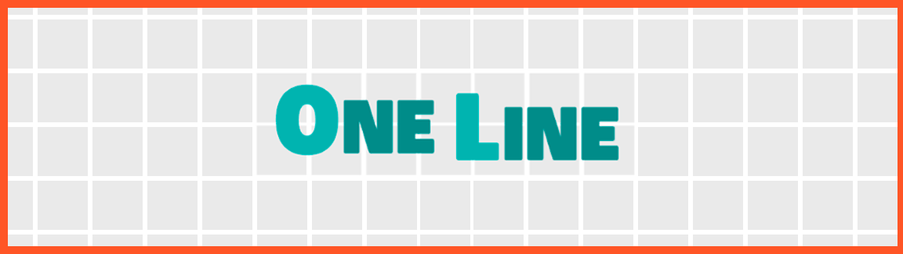

One Line (clon)
Al igual que los juegos encontrados en la parte de PS4 , en este caso tenemos un clon multiplataforma (para Android y para PC) del popular juego One Line
En este caso el juego ha sido realizado con Unity 3D en C#. Debido a esto, en contraposición con Switch Dash (clon) , este cuenta con muchos más elementos como interfaces más complejas, algoritmos más sofisticados, integración de anuncios, compras dentro de la aplicación...
El juego consiste en resolver una serie de niveles en los cuales tenemos que recorrer todas las casillas de un puzzle dado, ordenado y agrupado por dificultad, sin levantar el dedo de la pantalla de nuestro teléfono móvil.
También cuenta con un modo "contrareloj" en el cual tendremos que resolver un nivel en el tiempo estimado para poder acceder a una recompensa especial (moneda del juego), la cual nos servirá para comprar pistas dentro de niveles.
Imágenes del juego


¿Cómo instalarlo?
Dado que este juego no es de mi propiedad y es sólamente un clon con fines educativos, no veo apropiado poner ningún tipo de descarga, aunque como siempre dispongo de todo el código por si alguien tuviese la curiosidad de verlo.